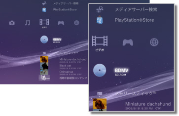

ビデオ > ビデオカテゴリーについて
ビデオカテゴリーについて
 （ビデオ）では、次のアイコンが表示されます。操作状況によって、表示されるアイコンは異なります。
（ビデオ）では、次のアイコンが表示されます。操作状況によって、表示されるアイコンは異なります。

 |
BDデータ管理 | Blu-ray Disc™（BD）によって使用される管理データが保存されます。 |
|---|---|---|
 |
メディアサーバー検索 | ネットワークで接続されているDLNAサーバーを検索することができます。 |
 |
メディアサーバー | DLNAサーバーに接続して、保存されている動画ファイルを再生できます。DLNAサーバーによってアイコンが異なります。 |
| ビデオ編集＆アップロード | 本体ストレージに保存した動画ファイルを編集できます。 | |
 |
BD-ROM / BD-R / BD-RE | Blu-ray Disc（BD）を再生できます。 |
 |
DVD-ROM / DVD-R / DVD+R / DVD-RW / DVD+RW | DVDやAVCHDディスクを再生できます。 |
 |
データディスク | CD-RやDVD-Rなどに保存された動画ファイルを再生できます。 |
 |
メモリースティック™ | メモリースティック™に保存された動画ファイルを再生できます。* |
 |
SDメモリーカード | SDメモリーカードに保存された動画ファイルを再生できます。* |
 |
コンパクトフラッシュ® | コンパクトフラッシュ®に保存された動画ファイルを再生できます。* |
 |
PSP™（PlayStation®Portable） | PSP™のメモリースティック™に保存された動画ファイルを再生できます。 |
 |
PSP™（PlayStation®Portable） | PSP™goの本体メモリーに保存された動画ファイルを再生できます。 |
| デジタルカメラ | PS3™に対応したデジタルカメラに保存された動画ファイルを再生できます。 | |
| WALKMAN®／ATRAC Audio Device（WALKMAN®） | WALKMAN®／ATRAC Audio Device（WALKMAN®）に保存された動画ファイルを再生できます。 | |
 |
ATRAC Audio Device | ATRAC Audio Deviceに保存された動画ファイルを再生できます。 |
 |
USB機器 | USBマスストレージ機器に保存された動画ファイルを再生できます。 |
 |
デジタルカメラ動画 | 記録メディアの［DCIM］フォルダーに保存された動画ファイルを再生できます。 |
|
（フォルダー） | 記録メディアにパソコンで作成したフォルダーがあるときに表示されます。 |
| （本体ストレージに保存された動画） | PS3™の本体ストレージに保存された動画ファイルを再生できます。縮小された画像（サムネイル）が表示されます。 | |
 |
（本体ストレージにダウンロードしたデータ） | 本体ストレージにダウンロードした動画ファイルです。起動するとデータがインストールされ、再生できるようになります。 |
| * |
お使いのPS3™によっては、記録メディアを使うときに別売りのUSBアダプターなどが必要になる場合があります。USBアダプターを使ったときは、 |
|---|
 （USB機器）として表示されます。
（USB機器）として表示されます。ヒント
- PS3™でPlayStation®Storeからビデオコンテンツを購入／レンタルするサービスは終了しています。
- DLNAについて詳しくは、
 （設定）＞
（設定）＞ （ネットワーク設定）＞［メディアサーバー接続］をご覧ください。
（ネットワーク設定）＞［メディアサーバー接続］をご覧ください。 - 著作権保護されたBDの映像を1080pの解像度で出力するには、HDCP（High-bandwidth Digital Content Protection）規格に対応した機器にHDMIケーブルで接続する必要があります。
- 著作権保護された動画ファイルの種類によっては、縮小された画像（サムネイル）が表示されない場合があります。
- 視聴年齢制限が設定されたBDを再生するときは、PS3™で設定したレベルに応じて再生状態が制限されます。BDの視聴年齢制限レベルは、（設定）＞
 （セキュリティー設定）で設定できます。
（セキュリティー設定）で設定できます。 - 視聴年齢制限が設定されたDVDを再生するときは、暗証番号の入力が必要な場合があります。暗証番号は、（設定）＞（セキュリティー設定）で設定できます。
- 視聴年齢制限が設定されたコンテンツは、
 で表示されます。4桁の暗証番号を入力すると再生できるようになります。暗証番号は、（設定）＞（セキュリティー設定）で設定できます。
で表示されます。4桁の暗証番号を入力すると再生できるようになります。暗証番号は、（設定）＞（セキュリティー設定）で設定できます。 - ディスクロック設定されたBDは、
 で表示されます。再生するには、ディスク作成時に設定した暗証番号を入力してください。
で表示されます。再生するには、ディスク作成時に設定した暗証番号を入力してください。 - ディスクや記録メディアなどの種類によっては、PS3™で正しく認識されない場合があります。
- HDCP（High-bandwidth Digital Content Protection）規格に対応していない機器をHDMIケーブルで接続すると、PS3™からの映像および音声を出力できません。
3Dコンテンツの視聴について
3D 映像の視聴には、3D規格に準拠した3Dテレビ、およびハイスピード規格に対応したHDMIケーブルが必要です。
ヒント
- Blu-ray 3D™ の映像を再生しているとき、コンテンツによって、メニューや字幕などの3D表現が他の再生機器と異なる場合があります。
- コンテンツによって、BD-J機能が3D再生されなかったり動作しなかったりする場合があります。
- Blu-ray 3D™ の映像を再生しているときは、Dolby TrueHDの再生には対応していません。Dolby Digitalの再生になります。
Blu-ray Disc（BD）のLocal Storageについて
BDの再生中にLocal Storageの容量が不足しているという内容のメッセージが表示されたときは、本体ストレージ内の不要なファイルを削除して、空き容量を増やしてください。
Local Storageとは、BD-ROM Profile1.1 / 2.0規格で定義されているデータ保存領域です。PS3™では、本体ストレージが使われています。